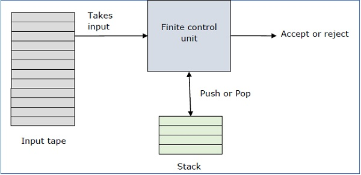

PUSH DOWN AUTOMATA
PDA as a building automation machines. As is known, the stack structure has two basic functions. Push and pop operations, as can be seen from the names of the stack to put and stack the data to perform the process. In the PDA, these functions are identical.
6 information is required to clearly identify the PDA.
(Q,S,G, d ,q0,F)Q:shows the situations in our automation.
S: it is the set of alphabets that can be used at the entry accepted by our machine.
G: a set of alphabets that can be used in a stack.
d: is a set of transitions between the States represented by q.
q0: initial state
F: final state.
EXAMPLE
This language accepts L = {01, 0011, 000111, ................. }
Firstly we put a special symbol ‘$’ into the empty stack.
State q2 - if we encounter input 0 and top is Null, we push 0 into stack.
- if we encounter input 1 and top is 0, we pop this 0.
State q3 - if we encounter input 1 and top is 0, we pop this 0.
- if we encounter input 1 and top is 0, we pop the top element.
If the special symbol ‘$’ is encountered at top of the stack,it is popped
out and it finally goes to the accepting state q4.
Reference: http://www.tutorialspoint.com/automata_theory/pushdown_automata_acceptance.htm